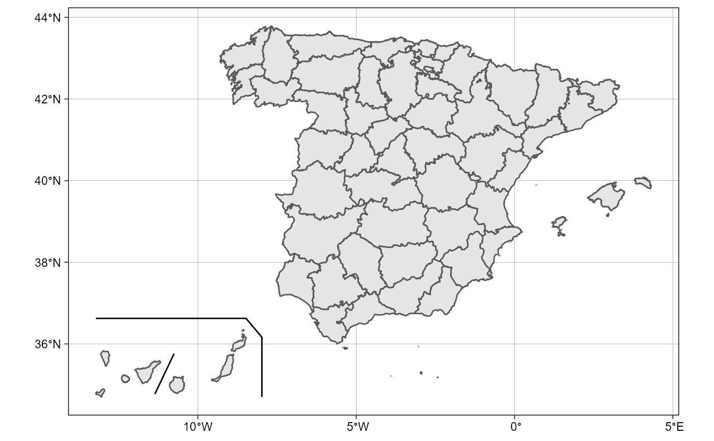
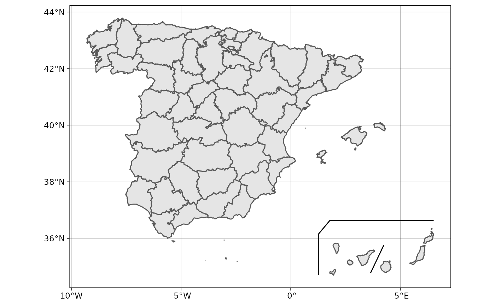
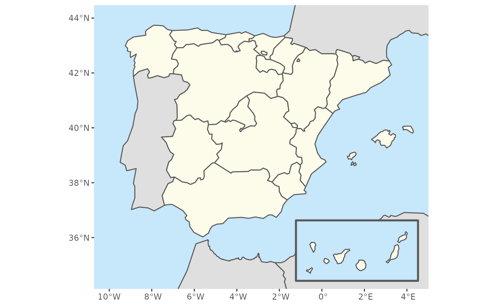

sf lines and polygons for insetting the Canary IslandsR/esp_get_can_box.R
esp_get_can_box.RdWhen plotting Spain, it is usual to represent the Canary Islands as an inset
(see moveCAN on esp_get_nuts()). These functions provides complementary
lines and polygons to be used when the Canary Islands are displayed
as an inset.
esp_get_can_box() is used to draw lines around the displaced Canary
Islands.
esp_get_can_provinces() is used to draw a separator line between the two
provinces of the Canary Islands.
esp_get_can_box(style = "right", moveCAN = TRUE, epsg = "4258")
esp_get_can_provinces(moveCAN = TRUE, epsg = "4258")esp_get_can_provinces extracted from CartoBase ANE,
se89_mult_admin_provcan_l.shp file.
Style of line around Canary Islands. Four options available:
"left", "right", "box" or "poly".
A logical TRUE/FALSE or a vector of coordinates
c(lat, lon). It places the Canary Islands close to Spain's mainland.
Initial position can be adjusted using the vector of coordinates. See
Displacing the Canary Islands.
projection of the map: 4-digit EPSG code. One of:
"4258": ETRS89
"4326": WGS84
"3035": ETRS89 / ETRS-LAEA
"3857": Pseudo-Mercator
A sf polygon or line depending of style parameter.
esp_get_can_provinces returns a LINESTRING object.
While moveCAN is useful for visualization, it would alter the actual
geographic position of the Canary Islands. When using the output for
spatial analysis or using tiles (e.g. with esp_getTiles() or
addProviderEspTiles()) this option should be set to FALSE in order to
get the actual coordinates, instead of the modified ones.
Other political:
esp_codelist,
esp_get_capimun(),
esp_get_ccaa(),
esp_get_country(),
esp_get_gridmap,
esp_get_munic(),
esp_get_nuts(),
esp_get_prov()
Provs <- esp_get_prov()
Box <- esp_get_can_box()
Line <- esp_get_can_provinces()
# Plot
library(ggplot2)
ggplot(Provs) +
geom_sf() +
geom_sf(data = Box) +
geom_sf(data = Line) +
theme_linedraw()

# \donttest{
# Displacing Canary
# By same factor
displace <- c(15, 0)
Provs_D <- esp_get_prov(moveCAN = displace)
Box_D <- esp_get_can_box(style = "left", moveCAN = displace)
Line_D <- esp_get_can_provinces(moveCAN = displace)
ggplot(Provs_D) +
geom_sf() +
geom_sf(data = Box_D) +
geom_sf(data = Line_D) +
theme_linedraw()

# Example with poly option
# Get countries with giscoR
library(giscoR)
# Low resolution map
res <- "20"
Countries <-
gisco_get_countries(
res = res,
epsg = "4326",
country = c("France", "Portugal", "Andorra", "Morocco", "Argelia")
)
CANbox <-
esp_get_can_box(
style = "poly",
epsg = "4326",
moveCAN = c(12.5, 0)
)
CCAA <- esp_get_ccaa(
res = res,
epsg = "4326",
moveCAN = c(12.5, 0) # Same displacement factor)
)
# Plot
ggplot(Countries) +
geom_sf(fill = "#DFDFDF") +
geom_sf(data = CANbox, fill = "#C7E7FB", lwd = 1) +
geom_sf(data = CCAA, fill = "#FDFBEA") +
coord_sf(
xlim = c(-10, 4.3),
ylim = c(34.6, 44)
) +
theme(
panel.background = element_rect(fill = "#C7E7FB"),
panel.grid = element_blank()
)

# }